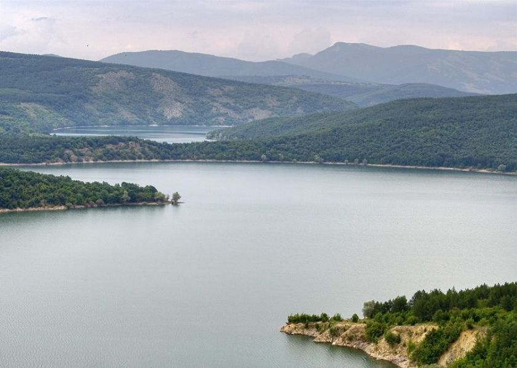

втория язовир който ще разгледаме е язовир Тича
Тѝча е язовир в Североизточна България. Той е седмият по големина в страната
Намира се в Шуменска област, най-близкият град е Велики Преслав, който е на по-малко от 10 km от преливната стена на язовира. Близки градове са също Върбица – на 18 km, и Шумен – на 40 km.
Общият обем на язовира е 311 800 000 m³ – 271 800 000 m³ полезен обем и 40 000 000 m³ мъртъв обем. Височината на стената е 55,50 m, а залятата площ при пълен язовир е 18,7 km². Обиколката му е над 100 km – най-голямата язовирна обиколка в България.
Обратно към главната страница